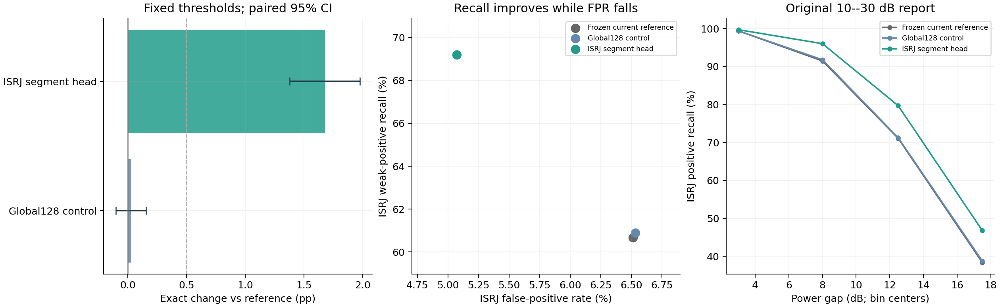

五种子分别评测，非集成。主阈值固定，仅更新ISRJ；其他五类输出不变。完成后复核不修改权重、阈值和check选型。
全部完成，耗时7分54秒；10个小头、240轮、60000优化器步；270组自动审计及45组主报告独立重放通过。
| 方法 | Exact% | MacroF1% | ISRJ弱召回% | ISRJ弱AP% | ISRJ FPR% |
|---|---|---|---|---|---|
| reference | 75.045 | 95.004 | 60.675 | 74.259 | 6.512 |
| global128 | 75.069 | 95.012 | 60.900 | 74.536 | 6.532 |
| segments124 | 76.721 | 95.385 | 69.202 | 82.568 | 5.071 |
global128_vs_reference：Exact差+0.025pp，条件95%区间[-0.103,+0.152]，3/5种子提高；正式验收未全部通过。
segments124_vs_reference：Exact差+1.677pp，条件95%区间[+1.378,+1.975]，5/5种子提高；正式验收通过。
segments124_vs_global128：Exact差+1.652pp，条件95%区间[+1.402,+1.902]，5/5种子提高；正式验收通过。
本轮冻结参考在新报告上为75.045%，上一轮75.724%来自不同身份池，不能跨池直接相减或叠加两轮增益。同预算全局头无可靠Exact收益，支持局部分段统计的额外价值。
| 方法 | 修正原错误 | 引入新错误 | ISRJ FP | ISRJ FN | ISRJ弱FN |
|---|---|---|---|---|---|
| reference | 0.0 | 0.0 | 258.4 | 455.2 | 384.6 |
| global128 | 16.6 | 14.6 | 259.2 | 451.0 | 382.4 |
| segments124 | 215.0 | 79.8 | 201.2 | 334.2 | 301.2 |
| 条件 | 方法 | 功率差dB | 正例数 | 召回% | AP% | AUROC% |
|---|---|---|---|---|---|---|
| development_test | reference | 0–6 | 2457 | 99.414 | 99.760 | 99.818 |
| development_test | reference | 6–10 | 661 | 91.498 | 93.199 | 98.031 |
| development_test | reference | 10–15 | 666 | 71.111 | 77.496 | 92.926 |
| development_test | reference | 15–20 | 312 | 38.397 | 30.674 | 81.084 |
| development_test | reference | 20–30 | 0 | 无正例 | 无正例 | 无正例 |
| development_test | segments124 | 0–6 | 2457 | 99.723 | 99.903 | 99.930 |
| development_test | segments124 | 6–10 | 661 | 96.036 | 96.715 | 99.142 |
| development_test | segments124 | 10–15 | 666 | 79.700 | 85.983 | 95.915 |
| development_test | segments124 | 15–20 | 312 | 46.795 | 43.667 | 86.586 |
| development_test | segments124 | 20–30 | 0 | 无正例 | 无正例 | 无正例 |
| ood_wide | reference | 0–6 | 1047 | 99.675 | 99.857 | 99.911 |
| ood_wide | reference | 6–10 | 242 | 94.876 | 95.380 | 98.874 |
| ood_wide | reference | 10–15 | 295 | 74.441 | 80.141 | 93.908 |
| ood_wide | reference | 15–20 | 242 | 30.826 | 34.385 | 75.802 |
| ood_wide | reference | 20–30 | 222 | 9.640 | 13.920 | 59.372 |
| ood_wide | segments124 | 0–6 | 1047 | 99.809 | 99.941 | 99.964 |
| ood_wide | segments124 | 6–10 | 242 | 97.686 | 98.010 | 99.595 |
| ood_wide | segments124 | 10–15 | 295 | 82.373 | 88.502 | 96.956 |
| ood_wide | segments124 | 15–20 | 242 | 40.826 | 50.340 | 85.165 |
| ood_wide | segments124 | 20–30 | 222 | 9.189 | 16.576 | 66.057 |
| 标签 | 仅该标签错误数均值 | FP数均值 | FN数均值 |
|---|---|---|---|
| FMB | 180.4 | 72.6 | 185.8 |
| AMA | 68.6 | 24.2 | 75.6 |
| SawFM | 505.0 | 142.4 | 527.2 |
| SinFM | 197.8 | 87.8 | 211.4 |
| MFT | 238.6 | 131.0 | 219.2 |
| ISRJ | 380.6 | 201.2 | 334.2 |
| 规则 | 方法 | Exact% | ISRJ弱召回% | ISRJ FPR% |
|---|---|---|---|---|
| isrj_f1 | reference | 75.062 | 59.468 | 6.174 |
| isrj_f1 | global128 | 75.094 | 60.327 | 6.336 |
| isrj_f1 | segments124 | 76.758 | 68.057 | 4.511 |
| matched_calibration_fpr | reference | 75.035 | 60.818 | 6.562 |
| matched_calibration_fpr | global128 | 75.077 | 61.022 | 6.562 |
| matched_calibration_fpr | segments124 | 76.466 | 72.781 | 6.668 |
匹配的仅为calibration FP预算，报告实际FPR独立测量，不能宣称严格等测试误报率。固定身份池五种子条件区间；同一仿真器，缺少实测验证。分段统计为何有效仍是机制解释假设；轻微平移不能排除大范围到达时间和参数变化下的回退。
